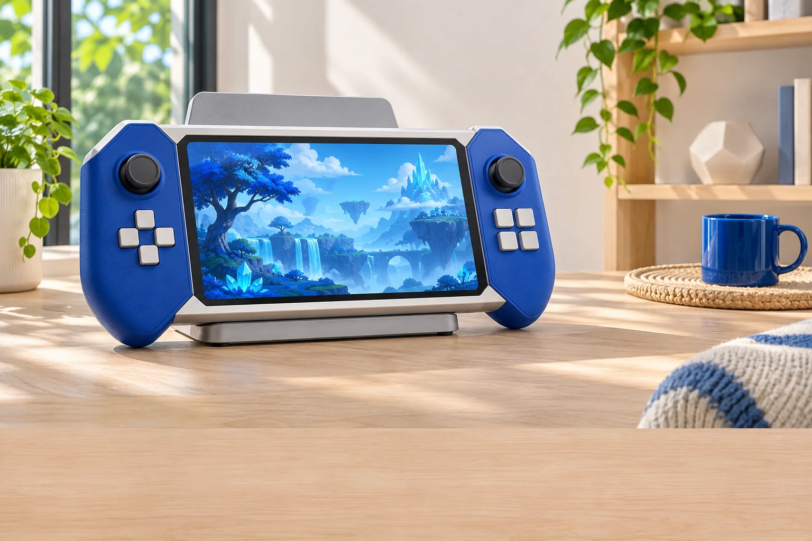

SÓ PORTÁTIL
Melhor Switch para jogar só no portátil
Para quem joga sozinho, no sofá, na viagem ou no intervalo, e não precisa ligar na TV.

Melhor custo-benefício para jogar só no portátilNintendo Switch Lite (Turquesa)
CURADORIA TECHAPROVADO · 2026
O Switch Lite, o Switch OLED e o Switch 2 parecem a mesma coisa em tamanhos diferentes, mas não são: um não liga na TV, outro roda só os jogos da primeira geração e o terceiro custa o dobro. Separamos 5 opções em 3 perfis e dizemos para quem cada uma vale a pena.

NOSSA LEITURA
Se é só na mão e sozinho, o Lite resolve. Se a TV entra na história, ou se duas pessoas vão jogar, o Switch OLED é o custo-benefício. Se você quer os lançamentos da Nintendo, que saem só para o Switch 2, não adianta economizar no modelo antigo.
COMECE POR AQUI
SÓ PORTÁTIL
Para quem joga sozinho, no sofá, na viagem ou no intervalo, e não precisa ligar na TV.
SWITCH OLED (TV E PORTÁTIL)
O Switch completo, que liga na TV e solta os controles, com a melhor tela da primeira geração.

SWITCH 2
Para jogar os lançamentos exclusivos da Nintendo, com tela maior, 120 Hz e até 4K na TV.

A FICHA, TRADUZIDA
01 - TV OU SÓ PORTÁTIL
O Switch Lite é só portátil: não tem saída para TV e os controles são presos ao corpo. O Switch OLED e o Switch 2 encaixam na base e jogam na TV, e os Joy-Con soltam para duas pessoas jogarem juntas.
Se você joga sozinho e na mão, o Lite basta. Se há criança e adulto disputando a TV, ou se vocês jogam juntos no sofá, vá de OLED ou Switch 2.
No Lite, dá para jogar a dois com controles comprados à parte, mas na tela pequena. E jogos que pedem os Joy-Con destacáveis não funcionam.
02 - JOGOS E GERAÇÃO
O Switch 2 é uma nova geração. Os jogos novos da Nintendo saem para ele, e muitos não rodam no Switch Lite nem no Switch OLED.
A biblioteca da primeira geração é enorme e continua à venda: Mario Kart 8, Zelda, Pokémon, Animal Crossing. Para esses jogos, o Switch OLED basta.
O Switch 2 roda a maior parte dos jogos do primeiro Switch, e alguns ganham melhorias de imagem. Poucos têm limitações; a Nintendo mantém a lista.
03 - TELA
O Lite tem tela LCD de 5,5 polegadas. O OLED tem 7 polegadas com tecnologia OLED: cada ponto acende sozinho, então o preto é preto e as cores saltam. O Switch 2 tem LCD de 7,9 polegadas, Full HD, com HDR e até 120 Hz.
Para quem joga muito no portátil, a tela do OLED é o maior ganho sobre o Lite. O Switch 2 é mais nítido e mais fluido em jogos compatíveis.
Na TV, o OLED mostra no máximo 1080p, como o Switch comum. O Switch 2 chega a 4K em jogos compatíveis.
04 - ARMAZENAMENTO
O Lite tem 32 GB, o OLED 64 GB e o Switch 2 256 GB. Um jogo grande ocupa de 10 a 20 GB, então quem compra jogo digital enche o Lite rápido.
Lite e OLED aceitam microSD comum, barato. O Switch 2 só aceita microSD Express, um padrão mais rápido e mais caro; o cartão do Switch antigo não serve para os jogos dele.
Quem compra jogo em cartucho precisa de pouco espaço: o jogo roda do cartucho e só as atualizações vão para a memória.
05 - BATERIA
A duração depende do jogo: jogos pesados gastam mais. O anúncio do OLED fala em 4,5 a 9 horas.
O Lite, menor, dura parecido com o OLED nos jogos leves. O Switch 2, com tela maior e mais potência, dura menos nos jogos pesados.
Para viagem longa, um carregador USB-C de celular com 20 W ou mais carrega os três.
A CURADORIA EM DETALHE
5 modelos da pesquisa
PERFIL · 1 MODELO
O Switch Lite é o Switch feito só para a mão: menor, mais leve e com os controles presos ao corpo. Ele roda os jogos do Switch que funcionam no modo portátil, mas não liga na TV e não solta os Joy-Con para jogar a dois no mesmo aparelho.
SWITCH LITE · ENTRADA 1 de 1
Melhor custo-benefício para jogar só no portátil
Tela de 5,5 polegadas · só portátil · 32 GB + microSD
Ver preço na AmazonPOR DENTRO DA ESCOLHA
O Switch mais barato e mais leve: tela de 5,5 polegadas, controles embutidos e bateria que aguenta uma viagem. Joga a biblioteca do Switch que funciona no modo portátil, de Mario a Pokémon e Zelda.
O Lite é o Switch para uma pessoa só. Se alguém da casa quer jogar na TV, ou se vocês querem jogar a dois no mesmo console, ele não serve: suba para o Switch OLED. Os lançamentos exclusivos do Switch 2 também não rodam nele.
| Tela | 5,5 polegadas LCD, 720p |
|---|---|
| Modos | Só portátil |
| Controles | Embutidos |
| Armazenamento | 32 GB + microSD |
| Versão | Nacional |
Fonte: ficha e descrição do anúncio, conferidas em 16/11/2026. Dados informados pelo fabricante.
PERFIL · 2 MODELOS
O Switch OLED faz tudo o que a primeira geração faz: joga na TV pela base, na mesa com o suporte e na mão. A tela OLED de 7 polegadas tem cores mais vivas e preto de verdade, e ele tem o dobro do armazenamento do Lite. Para os jogos do Switch, é o ponto de parada.
SWITCH OLED · CUSTO-BENEFÍCIO 1 de 2
Melhor custo-benefício para TV e portátil
Tela OLED de 7 polegadas · TV, mesa e portátil · 64 GB
Ver preço na AmazonPOR DENTRO DA ESCOLHA
O degrau acrescenta tudo o que o Lite não tem: liga na TV pela base, solta os Joy-Con para jogar a dois na hora e tem tela OLED de 7 polegadas, com cores vivas e preto profundo. A base tem entrada de cabo de rede e o suporte traseiro é largo, para jogar na mesa.
O OLED é o Switch que entrega mais por menos: dois controles na caixa, TV e portátil, e uma biblioteca enorme de jogos já lançados. Para quem não faz questão dos lançamentos exclusivos do Switch 2, é o ponto de parada.
| Tela | 7 polegadas OLED, 720p |
|---|---|
| Na TV | Até 1080p |
| Modos | TV, mesa e portátil |
| Armazenamento | 64 GB + microSD |
| Bateria | De 4,5 a 9 horas, conforme o jogo |
| Base | Com entrada de cabo de rede |
Fonte: ficha e descrição do anúncio, conferidas em 16/11/2026. Dados informados pelo fabricante.

SWITCH OLED · ALTERNATIVA 2 de 2
Outro caminho: já vem com jogo
Console + jogo + 3 meses de Nintendo Switch Online
Ver preço na KaBuM!POR DENTRO DA ESCOLHA
O mesmo Switch OLED, já com Super Mario Bros. Wonder e três meses do Nintendo Switch Online, o serviço que libera o jogo online e o catálogo de clássicos.
O pacote resolve o primeiro dia: o console sai da caixa com um jogo de plataforma para a família toda e com o online liberado por três meses. Se você já tem outro jogo em mente, o OLED sozinho é o caminho.
| Console | Nintendo Switch OLED |
|---|---|
| Jogo | Super Mario Bros. Wonder |
| Serviço | 3 meses de Nintendo Switch Online |
| Loja | KaBuM! |
Fonte: ficha e descrição do anúncio, conferidas em 16/11/2026. Dados informados pelo fabricante.
PERFIL · 2 MODELOS
O Switch 2 é a nova geração: mais potente, com tela de 7,9 polegadas Full HD com HDR e até 120 Hz, imagem de até 4K na TV em jogos compatíveis e 256 GB de armazenamento. Os Joy-Con 2 encaixam por ímã e viram mouse em jogos compatíveis. Ele roda a maior parte da biblioteca do primeiro Switch.
SWITCH 2 · CUSTO-BENEFÍCIO 1 de 2
Melhor custo-benefício para os lançamentos
Tela de 7,9 polegadas Full HD com HDR e 120 Hz · até 4K na TV · 256 GB
Ver preço na AmazonPOR DENTRO DA ESCOLHA
O salto é de geração: muito mais potência, tela de 7,9 polegadas Full HD com HDR e até 120 Hz, imagem de até 4K na TV em jogos compatíveis e 256 GB internos. Os Joy-Con 2 encaixam por ímã, viram mouse em jogos compatíveis e têm o botão C, que abre o chat de voz e vídeo.
O Switch 2 é para quem não quer ficar para trás: os exclusivos da Nintendo a partir de agora saem para ele, e ele roda a maior parte da biblioteca do primeiro Switch, muitas vezes com imagem melhor. Custa cerca do dobro do OLED; se você vai jogar sobretudo títulos já lançados, o OLED basta.
| Tela | 7,9 polegadas LCD, 1080p, HDR, até 120 Hz |
|---|---|
| Na TV | Até 4K em jogos compatíveis |
| Armazenamento | 256 GB + microSD Express |
| Controles | Joy-Con 2 magnéticos, modo mouse |
| Retrocompatível | Com a maior parte dos jogos do Switch |
| Versão | Nacional |
Fonte: ficha e descrição do anúncio, conferidas em 16/11/2026. Dados informados pelo fabricante.

SWITCH 2 · ALTERNATIVA 2 de 2
Outro caminho: já vem com jogo de futebol
Console Switch 2 em pacote com o EA Sports FC 27
Ver preço na KaBuM!POR DENTRO DA ESCOLHA
O mesmo Switch 2, em pacote com o EA Sports FC 27, o jogo de futebol da EA. Sai da caixa pronto para jogar a dois, com um Joy-Con 2 para cada.
O pacote compensa quando o jogo de futebol já estava na lista: costuma sair mais em conta do que comprar os dois separados. Para quem quer começar por Mario Kart ou Zelda, o console sozinho é melhor.
| Console | Nintendo Switch 2 |
|---|---|
| Jogo | EA Sports FC 27 |
| Armazenamento | 256 GB + microSD Express |
| Loja | KaBuM! |
Fonte: ficha e descrição do anúncio, conferidas em 16/11/2026. Dados informados pelo fabricante.
Nenhum modelo encontrado. Tente outro termo ou volte para Todos.
LADO A LADO
| Modelo | Perfil | Posição | Tela | Destaque |
|---|---|---|---|---|
| Nintendo Switch Lite (Turquesa) | Switch Lite | Entrada | 5,5 polegadas LCD, 720p | Tela de 5,5 polegadas · só portátil · 32 GB + microSD |
| Nintendo Switch OLED (Branco) | Switch OLED | Custo-benefício | 7 polegadas OLED, 720p | Tela OLED de 7 polegadas · TV, mesa e portátil · 64 GB |
| Switch OLED + Super Mario Bros. Wonder | Switch OLED | Alternativa | Console + jogo + 3 meses de Nintendo Switch Online | |
| Nintendo Switch 2 | Switch 2 | Custo-benefício | 7,9 polegadas LCD, 1080p, HDR, até 120 Hz | Tela de 7,9 polegadas Full HD com HDR e 120 Hz · até 4K na TV · 256 GB |
| Switch 2 + EA Sports FC 27 | Switch 2 | Alternativa | 256 GB + microSD Express | Console Switch 2 em pacote com o EA Sports FC 27 |
CONSIDERAÇÕES FINAIS
Os pacotes com jogo (OLED com Mario Wonder e Switch 2 com EA Sports FC 27) valem quando o jogo já estava na lista. Compare com o console sozinho somado ao preço do jogo.
O Switch OLED: joga na TV e no portátil, vem com dois controles e tem a melhor tela da primeira geração. Para os lançamentos exclusivos, só o Switch 2.
Vale para quem quer jogar a biblioteca da primeira geração, que é enorme, gastando cerca de metade do Switch 2. Os jogos novos exclusivos do Switch 2 não rodam nele.
Não. Ele é só portátil e os controles não soltam. Para jogar na TV, escolha o Switch OLED ou o Switch 2.
A maior parte, sim, em cartucho ou digital, e alguns ficam com imagem melhor. Poucos jogos têm limitações; a Nintendo publica a lista.
Só microSD Express. O microSD comum do primeiro Switch não serve para os jogos do Switch 2.
Porque ele muda várias vezes por dia. Usamos o preço só para montar a escada de cada perfil; o botão leva ao valor atualizado na loja.
TRANSPARÊNCIA EDITORIAL
Separamos os perfis pelo jeito de jogar: só portátil (Switch Lite), TV e portátil com os jogos da primeira geração (Switch OLED) e os lançamentos da nova geração (Switch 2). Cada modelo precisa responder com clareza "para quem ele é o certo".
Em cada perfil há modelos em faixas de preço diferentes, e cada degrau precisa entregar algo que o anterior não entrega. Dois modelos com a mesma proposta não entram juntos.
Ficha e especificações foram conferidas nos anúncios das lojas em 16/11/2026.
Os links de compra desta página são de afiliado: se você comprar por eles, o TechAprovado pode ganhar uma comissão, sem custo adicional para você. Isso não muda a ordem nem a escolha dos produtos.
📲 GUIAS E DICAS NO SEU FEED
Dicas práticas antes de comprar, em carrosséis e vídeos curtos, sempre com link para o guia completo.